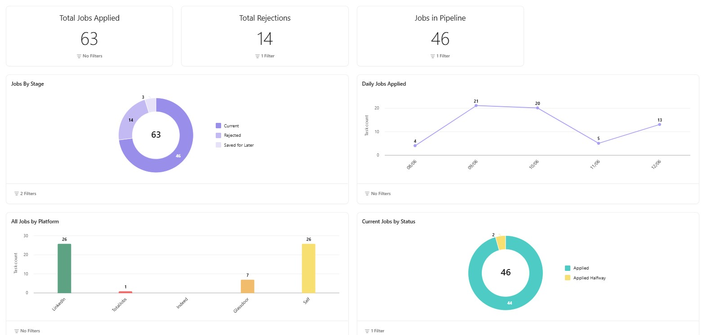

Job Tracking Management
Tracking job applications can be a daunting task, especially when you are applying to multiple positions simultaneously. Using a project management tool like Asana can simplify this process, helping you stay organized and on top of each application. Here’s my setup for an efficient job application tracker in Asana.
Asana is a web and mobile application designed to help teams organize, track, and manage their work. It offers a range of features such as task assignments, project timelines, and workflow automation, making it an effective tool for improving productivity and collaboration. With Asana, users can create projects, break them down into tasks, assign responsibilities, set deadlines, and monitor progress through various views like lists, boards, and calendars. The platform is highly customizable, allowing teams to tailor it to their specific workflows and integrate it with other tools they use, thereby streamlining project management and ensuring that everyone stays on the same page.
Step 1: Set Up Your Projects
To begin with, create separate projects for different aspects of your job application process. For example:
- Job Applications: Track all the job applications you have submitted.
- Cover Letters: Manage different versions and templates of your cover letters.
- Resume List: Organize and keep track of various resumes tailored for different roles.
Step 2: Create Sections and Tasks
Job Applications Project
Job applications project is the main project that will contain all the applied jobs as tasks. The project will contain 3 sections namely Current, Rejected and Saved for Later.
We create columns in the project to store how each job will be stored. We explain all the columns below.
| Column Name | Description | Dropdown Values (if applicable) |
|---|---|---|
| Company Name | Text field indicating the name of the company where the application was submitted. | N/A |
| Third Party Recruiter | Text field indicating if the application was submitted through a third-party recruiter. | N/A |
| Role | Text field specifying the job title for which you applied. | N/A |
| Date Applied | Date field recording the date when the application was submitted. | N/A |
| Status | Dropdown field indicating the current status of the application. |
|
| Cover Letter | Text field to the specific cover letter used for the application. | N/A |
| Resume | Dropdown field linking to the resume used from resume project. | N/A |
| Resume Version | Dropdown field linking to the resume version used from resume project. | N/A |
| Is Special Attention | Dropdown field to mark if the application was given special attention by you when applying. |
|
| Rejection Time | Date field indicating the time when the application was rejected if rejected. | N/A |
| Portal | Dropdown field indicating the portal used for the application. |
|
| Location | Text field indicating the location of the job. | N/A |
| Source Link | Text field with a link to the job posting. | N/A |
| Cover Letter Added | Dropdown field indicating if a cover letter was added to the application. |
|
| Location Type | Dropdown field indicating the type of job location. |
|
| Adv Salary | Text field indicating the advertised salary for the job. | N/A |
| Workday Used | Dropdown field indicating if Workday was used in the application process. |
|
Resume List Project
Create tasks for each type of resume. For example:
- Data Analyst Resumes
- Data Scientist Resumes
- Business Analyst Resumes
For each resume version, create a task and include:
- Resume Name: A descriptive name for the resume.
- Resume Identifier: The identifier used for resume when linking application.
- Resume Version: Version number.
- Link to Document: Attach or link the document for easy access.
when creating the Resume Identifier and Version custom field, mark it to be available in custom field library, this will be used when adding the columns to application tracker project, the dropdown values defined here will be visible in the application tracker project thus maintaining data integrity.
Cover Letters Project
Create a task for each of your cover letter.
- Cover Letter Name: A descriptive name for the cover letter version.
- Cover Letter Version: Version number or identifier.
- Link to Document: Attach or link the document for easy access.
Once the project setup is complete, you can start using the system to track your job applications. I personally add all new job applications to the "Current" section. As updates come in, I change the status accordingly and move the task to the appropriate section. For example, if an application is rejected, I update the status to "Rejected Application," move the task from "Current" to "Rejected," and record the rejection time.
Step 3: Monitoring your job search
You can also create basic charts in Asana using the Dashboard feature. I track the total number of jobs, rejected jobs, and daily job applications. This helps me monitor my job application progress over time. Check out the image below for some sample data. You can easily add charts by navigating to the Dashboard pane in Asana.
Conclusion
Using a project management tool to track your job applications can significantly streamline the job search process, making it easier to manage multiple applications and stay organized. By setting up dedicated projects for job applications, cover letters, and resumes, you can maintain a clear overview of your progress. Custom fields and task dependencies further enhance your ability to keep track of important details and deadlines. Regular updates and reviews ensure that your tracking system remains accurate and useful. With these tools and strategies, you can focus more on preparing for interviews and less on managing your job search logistics. Happy job hunting!